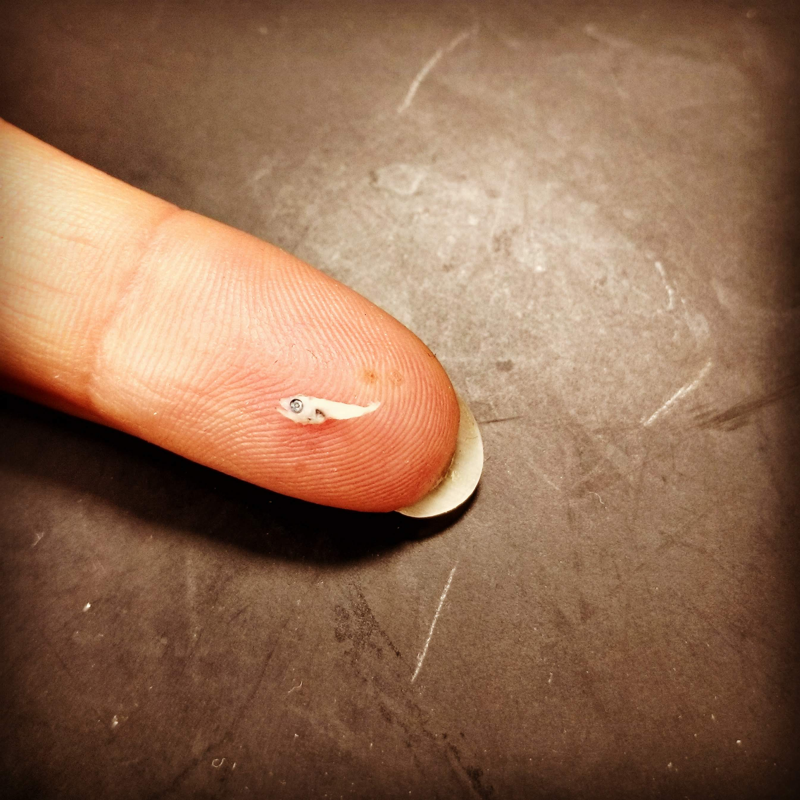

Research
My research covers a range of topics related to reproductive and early life history stages, and ranging from field- and laboratory-based investigations to mathematical ecology and biological-physical marine dispersal simulations. Many of these threads have implications for harvested or otherwise managed populations. Please read on for more detailed descriptions of a few major areas of my research.
Tuna larvae
Tuna are fascinating creatures: the adults are highly migratory and have evolved a number of features for optimized swimming, hunting, and thermal regulation. For example, when they want to do fast burst swimming (for example during hunting), they can fold their dorsal fin down into a slot in the top of their body.
Their larvae hatch at just 2-3 mm in length, and grow rapidly. By about 1-2 weeks of age, these larvae are hunting down other fish larvae with their big eyes and big mouths. 
Tuna are important as a source of food and they are prized by sport fishers. Like many species of fish, tuna exhibit high adult fecundity and high mortality in the early life stages. This means that small changes in early life growth and survival can have big impacts on the population dynamics and, by extension, on our decisions about how many fish to catch each year.
Phoenix Islands Protected Area
In addition to the important role that early life stages play in driving population dynamics, studying larvae can be an important way to gain insight into adult presence and spawning behavior in places where the adults cannot be studied. For example, in the Phoenix Islands Protected Area (PIPA), in the Republic of Kiribati, there is no commercial fishing allowed.
I was part of a project where we established a monitoring program of tuna larvae (skipjack, yellowfin, and bigeye) in PIPA. I analyzed larval tuna distribution as well as age and growth, finding no difference in growth between an El Niño year (2015) and a neutral year (2016). I also used particle backtracking simulations to demonstrate that spawning is occurring by tropical tunas both inside and to the northeast of PIPA.

Relative spawning output, from backtracking simulations, is shown for Katsuwonus pelamis (panels a–c) and Thunnus spp. (panels d–f). Panels a and d show the relative spawning output in 2015, panels b and e for 2016, and panels c and f for 2017.
Because of the huge contribution of tuna fishing to the economy of Kiribati, it is important to know if the protected area might also be protecting tunas. As our time series grows over the next few years, we hope to be able to ask questions about the influence of PIPA on spawning adults and larval tunas.
This paper is available open-access.
Atlantic bluefin tuna
Traditionally, it has been understood that Atlantic bluefin tuna exhibit strong natal homing, and that they reproduce in two locations: the Gulf of Mexico and the Mediterranean Sea. However, it has long been speculated that another spawning area might exist in the Western Atlantic, north of the Gulf of Mexico. In 2013, 67 bluefin larvae were collected in a region off the US East Coast known as the Slope Sea - it is the wedge of ocean extending from Cape Hatteras to the northeast, as the Gulf Stream peels away from the shelf break. These larval collections prompted debates over whether the area should be considered a “third” spawning ground.

Figure from Richardson et al. 2016 in PNAS
I set out to investigate whether the Slope Sea represented suitable larval habitat. Using samples collected by NOAA scientists in 2016, I found that larval growth rates did not differ between the Slope Sea and the Gulf of Mexico that year, and that in fact Slope Sea larvae were slightly larger than Gulf of Mexico larvae at the time of hatching. I also demonstrated, using both backward and forward tracking simulations, that the larvae were spawned in the Slope Sea, and that they would be retained in the region until 25 days old, when they become capable of directed swimming. This work demonstrates that, at least in 2016, the Slope Sea was providing suitable larval habitat. Additional simulation work carried out in collaboration with physical ocenaographer Irina Rypina has shown that the Slope Sea provided ample suitable habitat for spawning and larval growth throughout the summer, at least over the past 10 years.
Matrix population models
Matrix population models are widely used by ecologists, for species ranging from viruses to trees to whales. This type of model takes the population numbers, structured by size or age, and calculates the population numbers at the next time step.
\[\begin{equation} \mathbf{n}_{t+1} = \mathbf{A}*\mathbf{n}_t \end{equation}\]
The matrix itself, for example, could look like: \[\begin{equation} \mathbf{A}_1 = \begin{bmatrix} f_1 & f_2 & f_3 \\ s_1 & 0 & 0 \\ 0 & s_2 & s_3 \\ \end{bmatrix} \end{equation}\] This example might apply to an age-classified population where individuals of age 3 and older are indistinguishable. The first row contains the fertility rate of each age class, and the sub-diagonal contains the survival rate.
From these matrix models, we can estimate the stable population size and structure, the population growth rate, and a whole host of other individual- or population-level metrics. These models are built from demographic data from different populations, time spans, or experimental treatments. A common question to ask is how the population growth rate varies amongst multiple models for the same species, and how that variation depends on the changes in the entries of the matrix (the vital rates: survival, growth, and fecundity). In this way, we are decomposing the change in population growth rate into the contributions from each of the vital rates.
My work builds on the long-standing approximation method for this decomposition, called a Life Table Response Experiment (LTRE), to generate an exact version of LTRE, which can take into account not only the first-order effects of the vital rates, but also the effects of interactions amongst the vital rates. This exact method, which I will soon make available as an R package, can be used to more precisely study the population dynamics of any species. To demonstrate the utility of this tool, I am performing a meta-analysis of matrix population models from two publicly available databases to demonstrate the impact of the exact method, as well as to investigate patterns in the dependence of population dynamics on the vital rates, and how these patterns interact with life histories (e.g., the fast-slow continuum).
Maternal effects in rotifers
For many species, there is significant variation in individual fitness that can be attributed to maternal effects. Early life survival is strongly influenced by maternal provisioning (e.g., egg mass), particularly for species without post-natal care. Maternal health, body condition, and stress can lead to differences in survival or even phenotypic changes in the offspring. In rotifers, we observe a decline in the survival and fertility of offspring with increasing age of their mothers, a phenomenon known as maternal effect senescence. This is observed even in clonal populations, with no post-natal care, and no evidence of changes in maternal provisioning.
I have a productive collaboration studying maternal effects in rotifers with matrix population models. Using individual life history data from a laboratory population of rotifers, I found that maternal effect senescence was expressed mostly as decreased fertility, and that it can arise through decreasing selection gradients with age. This paper is available open-access.
I have also collaborated on a project investigating how maternal age influences lifetime reproductive output and have an ongoing collaboration looking at how these observed maternal effects respond to caloric restriction treatments.
Larval dispersal
Dispersal is a crucial life history event that influences the dynamics of local and meta-populations as well as invasion and evolutionary processes. While organisms in terrestrial systems often exhibit adaptations to increase their dispersal, aquatic and marine systems tend to be highly dispersive and adaptations are expected to arise to restrict transport in ocean currents. Two major traits related to dispersal in fish larvae are the pelagic larval duration and the vertical positioning of individuals. Pelagic larval duration sets the scope of maximum dispersal distance based on transport in ocean currents, and vertical positioning is important because wind-driven ocean currents decay with depth. In particular, it has been shown in some locations that a downward shift as larvae grow (a phenomenon termed ontogenetic vertical migration or OVM) can constrain dispersal and help larvae get back to shore.

Sketch of a MOCNESS net system, designed to take depth-stratified plankton samples. The survey data used in this study were collected with a modified MOCNESS.
Using data from two years of monthly surveys across the Straits of Florida, I analyzed the vertical distributions of 23 taxa of coral reef fish larvae, finding behaviors that fit into several broad categories: surface-associated taxa, taxa that exhibit OVM, and messier patterns. These messier patterns include broadening depth preference with age, a complete lack of depth preference, and a shift towards shallower waters with age.
In larval simulations inspired by these vertical patterns, I found that a species exhibiting an even distribution across the water column experiences similar dispersal as a species exhibiting OVM. Both of these behaviors, even distribution and OVM, had more constrained dispersal and less connectivity in general across the Caribbean region. However, these patterns were more complex on regional and local scales, where the influence of local hydrography and habitat availability helped determine the dispersal and connectivity.